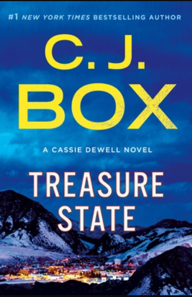

|
Mystery |
Book Suggestion |
|
Mystery |
Book Suggestion |
The mystery genre is a genre of fiction that follows a crime (like a murder or a disappearance) from the moment it is committed to the moment it is solved. Mystery novels are often called “whodunnits” because they turn the reader into a detective trying to figure out the who, what, when, and how of a particular crime.
| Books | Summary | Author |
| #1 NEW YORK TIMES BESTSELLER • In the propulsive debut novel from the host of the #1 true crime podcast Crime Junkie, a journalist uncovers her hometown's dark secrets when she becomes obsessed with the unsolved murder of her childhood neighbor—and the disappearance of another girl twenty years later. |
Not only is she the founder of the company, but also its CEO. At the moment, she produces roughly a dozen different true crime podcasts through her business. She's also the author of several different books. When you put all of her endeavors together, it is estimated that she makes roughly $480,000 a year. |
|
| Christopher and Hannah are a happily married surgeon and nurse with picture-perfect lives. All that's missing is a child. When Janie, an abandoned six-year-old, turns up at their hospital, Christopher forms an instant connection with her, and he convinces Hannah they should take her home as their own. | Dr. Lucinda Berry is a trauma psychologist and leading researcher in childhood trauma. She uses her clinical experience to create disturbing psychological thrillers, blurring the line between fiction and nonfiction. | |
| If looks can kill, a smile can be deadly. Special Agent Stella Knox became an FBI agent to find the dirty cops responsible for her father's murder and make them pay. But fresh out of Quantico, her first case has her seeking justice for a different victim—three of them, in fact. | Enigmatic and gripping, Killer Smile is the first book in the new Stella Knox Series by bestselling author Mary Stone and Stacy O'Hare—a nail-biter that will make you wonder just how safe small towns really are. Scroll up to grab your copy today! | |
|  | A poem that promises buried treasure to one lucky adventurer has led to a cutthroat competition and five deaths among treasure-hunters. But Cassie's client doesn't want the treasure. Instead, he claims to be the one who hid the gold and wrote the poem. | Charles James Box Jr. is an American author of more than thirty novels. Box is the author of the Joe Pickett series, as well as several stand-alone novels, and a collection of short stories. The novels have been translated into 27 languages. Over ten million copies of his novels have been sold in the U.S. alone. |
| 'A Little Girl Lost' is a poem about a girl lost to her father since she thwarts him and makes love with a young man. In this poem Blake presents the father as a person who denies his daughter the freedom to love and lead a happy life with her lover. | She was a modern-day Shirley Temple, but at the age of nine Drew Barrymore was drinking alcohol. At ten she took up marijuana, and by twelve she began snorting cocaine. Here is her gripping, heart-wrenching story--a story of a childhood gone awry and a young woman battling to restore order to her chaotic life |